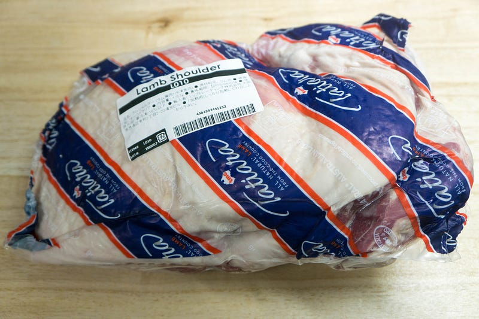
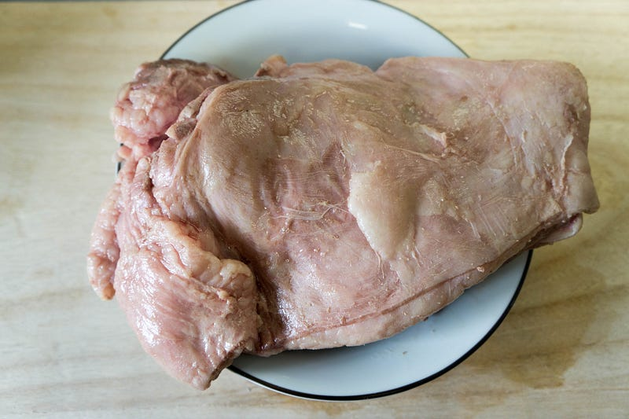
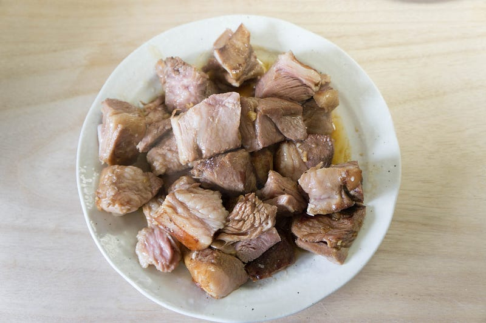
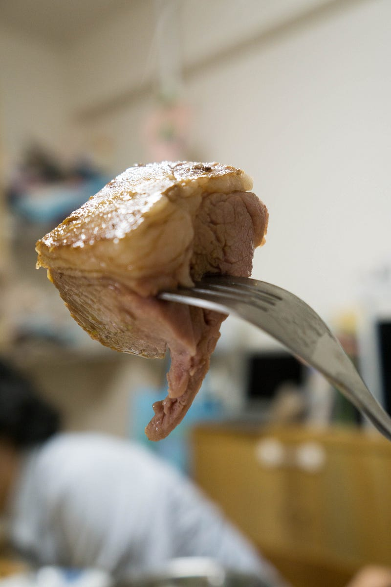

ラム肩ブロックをanovaでやる
ラム肩ブロックをanovaでやる
いつか買ってみたかったラム肩ブロック。買った。当然低温調理する。
前回はこちら
New: Anova Precision Cooker - WIFI 2nd Gen (900 Watts)が卓上IHクッキングヒーターストアでいつでもお買い得。当日お急ぎ便対象商品は、当日お届け可能です。アマゾン配送商品は、通常配送無…amzn.to
ラムチョップはいままでに何回も何回も料理してきたが、ラムのブロックを買うというのは長い間の夢であった。しかしラム肉を食べられない、という人もいるのは事実であり、そんなブロック肉を買っても… と諦めていた。
が、訓練により我が家のちびっ子どもはラム肉をおいしそうにぱくぱくと食べるように育ち、2人で大人一人前程度は肉を食べるようになってきた。妻も食べられるし、実家の応援もある程度期待できる。
というわけで満を持してのラム肩ブロックである。
ということでラム肩、ど忘れしたが、多分1.2kgくらい

肩肉はボチボチ筋も多いし、繊維が太めなのでじっくりやる。ということで60℃で10時間。夜仕込んでおいて、夜中に起きてお湯から引き上げ、急速冷蔵しておいた。
食べる前に57℃で温度をもどし、開封したのがこちら。

脂身も結構ある。今回は量もあったので、最終的に脂身は半分くらい残したが、お好きな人であれば非常においしい部分だ。10時間もやると脂身も良い感じにとろけはじめる。
これをぶつ切りにしてバターニンニク醤油でざざーっと炒めた。この写真は半分の肉をやった結果だけど、2回目にはバターの量を2倍（約20g）にした。バターはある程度あったほうが完全にうまい。

醤油バターご飯のようなヤバい香りをまとった、見た目からは想像もつかないくらいあっさりした肉だった。なんと前回の紹介したカンガルー肉と合わせて、大人4人、幼児2人で脂身を残したくらいで後は完食してしまった…

ラム好きにはたまらない柔らかさとねっとりとしたコクだった。なのにあっさりで、ニンニクバター醤油が脳内にかすかに残っていた「もっとヘルシーに食べないと」という良識を駆逐していく味だった。
たまらん。これは本当に機会があったら食べて欲しい。しかし家の中はしらばらくラムの匂いで満ちている事になるので、それは覚悟しておいてほしい。